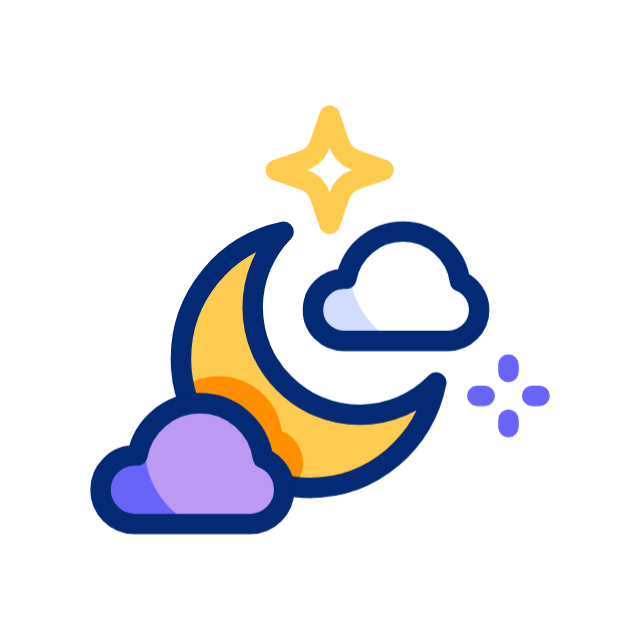

< annecarolldev >
Clique para mudar o tema para claro.

Habilidades

Experiência

Desde 2008, atuo como desenvolvedora de software, tanto fullstack quanto backend.
Possuo extensa experiência em PHP, Javascript e bancos de dados. Atuo principalmente no desenvolvimento de aplicações web robustas em PHP, assim como também em modelagem, criação, manutenção e otimizações de banco de dados.
Mas também atuo no desenvolvimento de sites, em implementação de soluções de cache em memória com Redis, manutenção e aprimoramento de sistemas legados, migração de sistemas e de bancos de dados, processos de melhoria de eficiência e escalabilidade de sistemas, revisões e retaforação de código para assegurar a qualidade do desenvolvimento, integrações de API de terceiros, entre outros serviços ligados a desenvolvimento e manutenção de sistemas.